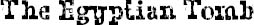

OVER THE NEXT month, August and I hung out a lot after school, either at his house or my house. August’s parents even invited Mom and me over for dinner a couple of times. I overheard them talking about fixing Mom up on a blind date with August’s uncle Ben.
On the day of the Egyptian Museum exhibit, we were all really excited and kind of giddy. It had snowed the day before—not as much as it had snowed over the Thanksgiving break, but still, snow is snow.
The gym was turned into a giant museum, with everyone’s Egyptian artifact displayed on a table with a little caption card explaining what the thing was. Most of the artifacts were really great, but I have to say I really think mine and August’s were the best. My sculpture of Anubis looked pretty real, and I had even used real gold paint on it. And August had made his step pyramid out of sugar cubes. It was two feet high and two feet long, and he had spray painted the cubes with this kind of fake-sand paint or something. It looked so awesome.
We all dressed up in Egyptian costumes. Some of the kids were Indiana Jones–type archaeologists. Some of them dressed up like pharaohs. August and I dressed up like mummies. Our faces were covered except for two little holes for the eyes and one little hole for the mouth.
When the parents showed up, they all lined up in the hallway in front of the gym. Then we were told we could go get our parents, and each kid got to take his or her parent on a flashlight tour through the dark gym. August and I took our moms around together. We stopped at each exhibit, explaining what it was, talking in whispers, answering questions. Since it was dark, we used our flashlights to illuminate the artifacts while we were talking. Sometimes, for dramatic effect, we would hold the flashlights under our chins while we were explaining something in detail. It was so much fun, hearing all these whispers in the dark, seeing all the lights zigzagging around the dark room.
At one point, I went over to get a drink at the water fountain. I had to take the mummy wrap off my face.
“Hey, Summer,” said Jack, who came over to talk to me. He was dressed like the man from The Mummy. “Cool costume.”
“Thanks.”
“Is the other mummy August?”
“Yeah.”
“Um … hey, do you know why August is mad at me?”
“Uh-huh.” I nodded.
“Can you tell me?”
“No.”
He nodded. He seemed bummed.
“I told him I wouldn’t tell you,” I explained.
“It’s so weird,” he said. “I have no idea why he’s mad at me all of a sudden. None. Can’t you at least give me a hint?”
I looked over at where August was across the room, talking to our moms. I wasn’t about to break my solid oath that I wouldn’t tell anyone about what he overheard at Halloween, but I felt bad for Jack.
“Bleeding Scream,” I whispered in his ear, and then walked away.